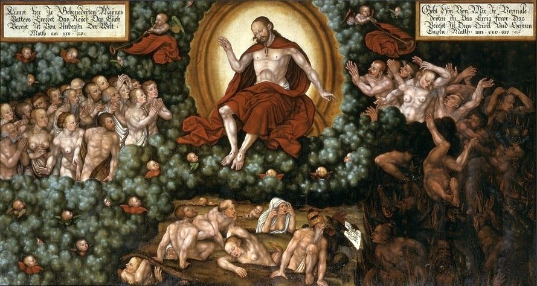

Romans 14 — The Mister Translation

⚠ Romans 14 has no scene to paint, and this is the nearest one: the seat of God before which every person gives an account (verses 10–12). The painting is Matthew 25, the separation of the blessed from the cursed, and it does not show the chapter’s argument, which is about a brother’s conscience and the food on a table. The banners are in German, and the reference to Matthew 25 is written on them.

“Welcome the one who is weak in faith” (ton de asthenounta tē pistei proslambanesthe, Romans 14:1). The verb proslambanō means to take someone to oneself, to receive a person into one’s company or one’s house. The same verb closes the first argument of the chapter in verse 3, “God has welcomed him”: the command to the congregation and the act of God share one word, so the reader is asked to welcome as God welcomed. The adjective asthenōn, weak, can describe a body; here it is weakness tē pistei, in the faith. The shelf divides on the phrase after “weak.” KJV “him that is weak in the faith receive ye, but not to doubtful disputations,” ASV “him that is weak in faith receive ye, yet not for decision of scruples,” and NWT 2013 “do not pass judgment on differing opinions” all translate mē eis diakriseis dialogismōn. This translation keeps the judging word, since diakrisis is a judgment or a decision, and says “opinions” for dialogismoi, the reasonings a person runs through in his own head.
“Who are you to judge someone else’s servant?” (sy tis ei ho krinōn allotrion oiketēn, Romans 14:4). Allotrion oiketēn is “a servant who belongs to another,” a household slave under another master, and the sentence says that the one who judges is not the owner. “He stands or falls” is a judgment on the master’s authority, not on the servant’s worth: stēkei and piptei are the words of standing and falling. The last clause leaves its subject open. The Greek says only ho kyrios, “the lord,” and the referent could be the master or God. The KJV has “God is able to make him stand,” the ASV “the Lord hath power to make him stand,” and the NWT 2013 “Jehovah can make him stand.” This translation keeps “the Lord” because the noun is open in the Greek, and the note records the readings.
“One person considers one day above another” (par’ hēmeran, Romans 14:5). The chapter does not say which days were being kept. The phrase is krinei hēmeran par’ hēmeran, “judges one day beside another,” and the verb krinō is the same verb as “judge” in verses 3, 4 and 10. The second man judges every day alike, and the verse gives the rule for both: “let each one be fully convinced in his own mind.” The verb plērophoreō is a verb of full assurance, and the translation says “fully convinced” because the reader needs to see that the conviction is the person’s own, in his own mind. The KJV has “fully persuaded,” the ASV “fully assured,” and the NWT 2013 “fully convinced.”
“He gives thanks to God” (eucharistei tō theō, Romans 14:6). The verse is built in pairs. The one who keeps the day keeps it for the Lord; the one who eats, eats for the Lord, and gives thanks; the one who abstains abstains for the Lord, and gives thanks. The same thanksgiving sits on both sides of the division, and that is the point. The Greek word kyrios is the one of verses 4 and 8, and the translation keeps “the Lord” here for the same reason as there. The NWT 2013 renders it “to Jehovah” in each place.
“None of us lives for himself” (oudeis gar hēmōn heautō zē, Romans 14:7). The dative heautō, “for himself,” is repeated in the verb of dying, and the same dative runs through verses 7 and 8: we live tō kyriō, for the Lord, and we die for him. The verse ends in a genitive of possession, tou kyriou esmen, “we are the Lord’s.” The NWT 2013 reads “we belong to Jehovah”; the ASV and the KJV read “we are the Lord’s” (“whether we live therefore, or die, we are the Lord’s”). This translation says “we belong to the Lord” for the same reason as in verse 4.
“Christ died and came to life” (Christos apethanen kai ezēsen, Romans 14:9). The Greek has two verbs of death and life, one after the other, and gives the purpose: hina kai nekrōn kai zōntōn kyrieusē, “that he might be lord both of the dead and of the living.” The verb kyrieuō is the one of Romans 6:9 and 6:14, where death and sin are named as lords with limits, and the chapter ends the same argument with Christ as the one whose lordship has no such limit. The Textus Receptus and the Byzantine text add kai anestē, “and rose,” so that the KJV reads “Christ both died, and rose, and revived.” The critical text prints “died and came to life” without the extra verb. The translation follows the critical text, and the NWT 2013 “came to life again” does too.
“We will all stand before the judgment seat of God” (tō bēmati tou theou, Romans 14:10). The bēma is the raised platform from which a magistrate speaks and decides, the seat that Festus sat on in Caesarea (Acts 25:6) and that the Jews brought Paul to at Corinth (Acts 18:12). Here the seat is God’s. The manuscript evidence is split. The SBLGNT, whose apparatus marks the word, reads the genitive for God; the KJV follows the Textus Receptus and the Byzantine text in reading “of Christ” (“the judgment seat of Christ”). Both forms say that a brother will stand before the one seat, and the difference is one word.
“As I live,” says Jehovah (Zō egō, legei kyrios, Romans 14:11). Paul is quoting Isaiah 45:23, and the speaker in Isaiah is God himself (“I am God,” 45:22). The Greek has kyrios, and this translation renders the word “Jehovah” because it is the name of the speaker of the oath in the Hebrew, the rule the translation applies to every OT quotation. The verb changes at the end. The Hebrew of Isaiah has the oath that every tongue will swear by God, and the Greek of the Septuagint has “will confess,” exomologēsetai, which Paul keeps. The same verb, exomologeō, comes in the Philippians hymn at 2:11 (not yet on these pages), where it is the confession of Christ as Lord. The shelf: KJV “saith the Lord” and “every tongue shall confess to God,” ASV “saith the Lord, to me every knee shall bow, And every tongue shall confess to God,” and NWT 2013 “to me every knee will bend, and every tongue will make open acknowledgment to God.”
“Judge this rather” (touto krinate mallon, Romans 14:13). The chapter has been saying “do not judge” since verse 3, and this verse keeps the verb but turns its use: stop judging one another, and judge instead the other thing. The translation keeps “judge” in both halves, because the Greek plays the one verb against itself. The thing to be judged is the decision not to put proskomma, a stumbling block, or skandalon, a snare or a trap, in a brother’s way. The two words are nearly synonyms; the translation keeps both because the Greek does. The same proskomma returns in verse 20, and the skandalon reappears in verse 21.
“Do not let your good be spoken of as evil” (mē blasphēmeisthō oun hymōn to agathon, Romans 14:16). The verb blasphēmeō means to speak against, to speak evil of, and in the middle or passive it is to be spoken of ill. Here it has no god as its object: the good that the readers do is what outsiders could slander. The shelf: KJV “Let not then your good be evil spoken of,” ASV “Let not then your good be evil spoken of,” and NWT 2013 “do not let the good you do be spoken of as bad.” All three name the act of speaking; none of the three uses the word “blaspheme.”
“The kingdom of God is not eating and drinking” (hē basileia tou theou brōsis kai posis, Romans 14:17). Paul sets the matter of food against the kingdom in one sentence, and gives the kingdom its content: “righteousness and peace and joy in the Holy Spirit.” The phrase brōsis kai posis, “eating and drinking,” is the chapter’s topic in two words. The Greek of Acts 10:14 and 15 uses the adjective koinos, common, for the food Peter was told not to call unclean, and the root that verse 14 of this chapter uses for “unclean.” The KJV says “meat and drink,” and the ASV and NWT 2013 “eating and drinking.” The translation keeps the verbs, which the Greek has as nouns.
“Do not tear down the work of God for the sake of food” (mē heneken brōmatos katalyē to ergon tou theou, Romans 14:20). The verb katalyō is to take apart, to tear down, the verb of a building that is being unmade. Verse 19 spoke of oikodomē, the building up of one another, and this verse turns the picture: the work of God is a building, and the meal can be the wrecking ball. “All things are clean” repeats verse 14 in the positive, and the sting is in the last clause: it is evil for the one who eats with a stumble, not for the food. The three verbs of verse 21 are “stumbles,” “is offended,” and “grows weak,” and the translation keeps them separate, since the Greek does. The KJV has “For meat destroy not the work of God”, and the NWT 2013 “Stop tearing down the work of God”; the ASV “Overthrow not” keeps the picture of a building.
“The faith you have, keep to yourself before God” (sy pistin hēn echeis kata seauton echē enōpion tou theou, Romans 14:22). The phrase kata seauton is “according to yourself,” that is, in your own case, and the rest of the sentence is in front of God. The faith that the strong have is private in one sense and public in another: the conviction is not to be paraded, and it is not to be hidden from God. The beatitude that follows is about the one who does not condemn himself by what he dokimazei, tests and approves. The verb is the one of verse 18, where the person who serves Christ is dokimos, approved by people, so the approval in verse 22 is the approval of one’s own practice.
“Whatever is not from faith is sin” (pan de ho ouk ek pisteōs hamartia estin, Romans 14:23). The one who diakrinomenos, is divided, has doubts, and eats anyway, is katakekritai, condemned, because the eating is not from faith. The Greek verb katakrinō is the same verb of condemnation as the verb of verse 22, and the chapter ends where it began. The last sentence is general, and its force is in the phrase ek pisteōs, from faith: what is not done from faith is sin. The sentence is not a rule about food. It is the rule the chapter has been applying to food.
Next in this book: Romans 15 is not yet on these pages — it opens “we who are strong ought to bear the weaknesses of the weak” (15:1; Greek: Opheilomen de hēmeis hoi dynatoi ta asthenēmata tōn adynatōn bastazein).